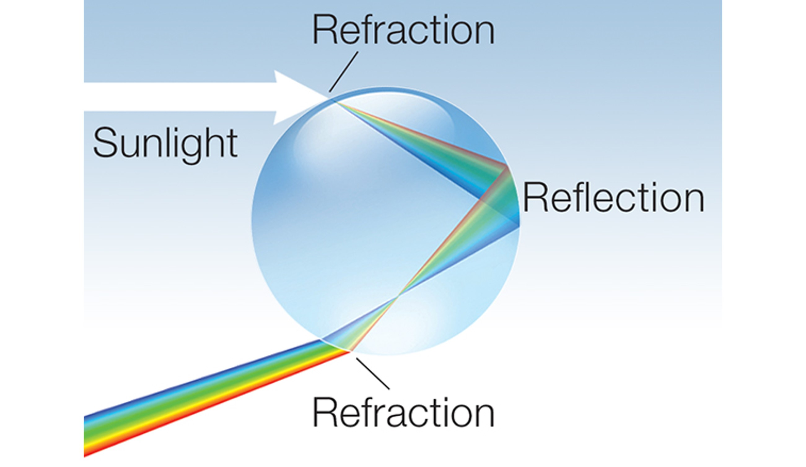

4. Scattering electromagnético
Contents
MEC501 - Manejo y Conversión de Energía Solar Térmica
4. Scattering electromagnético#
Profesor: Francisco Ramírez Cuevas
Fecha: 2 de Septiembre 2022
Interacción de luz según el tamaño de un cuerpo#
Hasta el momento hemos analizado las ecuaciones de Maxwell y condiciones de borde en coordenadas cartesianas. Estas relaciones se aplican a interfaces rectas.
En el caso de cuerpos curvos, los coeficientes de Fresnel y otras fórmulas relacionadas aún son aplicables, siembre y cuando el radio de curvartura del cuerpo \(R \gg \lambda\)
{kind=link}
Interacción de luz con cuerpos grandes#
A través de este principio podemos explicar la separación de colores en un arcoiris.
Primero, es importante notar que el índice de refracción del agua en el espectro visible no es constante. Este índice tiene un pequeño grado de dispersión, y decae a medida que la longitud de onda crece. Así, a partir de la ley de Snell, el ángulo de transmisión de cada onda (o color), crece proporcional a la longitud de onda.

Este fenómeno produce que las ondas se separen en el espacio en función de su longitud de onda.
En una gota de agua, el efecto de separación de colores se magnifica a medida que la luz se refleja en el interior
{kind=link}
Interacción de luz con cuerpos pequeños#
Cuándo las dimensiones del cuerpo, \(D\), son comparables a la longitud de onda, el radio de curvatura se hace significativo y las soluciones de las ecuaciones de Maxwell para una interface plana no son aplicables
En este caso, se produce el fenómeno de scattering. El scattering produce que la luz sea dispersada en múltiples direcciones, mientras una porción de la energía incidente es absorbida por el objeto (absorción). Llamamos extinción a la porción de la luz que no sufre scattering ni absorción.

Scattering en esferas (solución de Mie)#
Consideremos el modelo simple una onda electromagnética interactuando con una esfera de radio \(R\) tal que \(R/\lambda \sim 1\)

Llamaremos al índice de refracción de la esfera \(N_p\), y al índice de refracción del exterior \(N_h\).
En este caso asumimos que el índice de refracción del exterior no tiene componente compleja, es decir \(N_h = n_h\)
La solución, propuesta por Gustav Mie, se basa una expansión en serie de ondas esféricas \(\vec{M}_{lm}(r, \theta,\phi)\) y \(\vec{N}_{lm}(r, \theta,\phi)\) (más información en las referencias).
Por ejemplo, la componente del campo eléctrico correspondiente al scattering, \(\vec{E}_\mathrm{sca}\) es:
donde los coeficientes \(a_l\) y \(b_l\) están dados por la funciones de Ricatti-Bessel, \(\psi(x)\) y \(\xi(x)\), en la forma:
donde \(x = n_hk_0R\), y \(p = N_p/n_h\).
El campo magnético está dado por \(\vec{H}_\mathrm{sca} = \frac{n_h}{Z_0} \left(\hat{k}\times\vec{E}_\mathrm{sca}\right)\).
Distribución del campo eléctrico#
A partir de esta solución, podemos visualizar la distribución del campo eléctrico durante el fenómeno de scattering.
En la siguiente figura, el campo eléctrico oscila perpendicular al plano de la pantalla. A la izquierda podemos visualizar la distribución del campo electrico total, es decir el campo eléctrico incidente \(\vec{E}_\mathrm{inc}\) y \(\vec{E}_\mathrm{sca}\). A la derecha, hemos removido \(\vec{E}_\mathrm{inc}\) para poder visualizar \(\vec{E}_\mathrm{sca}\)

La distribución del scattering depende del tamaño de la partícula en relación la longitud de onda.
{kind=link}
Particularmente, cuando \(D/\lambda \ll 1\), se denomina Rayleight scattering. En este caso el campo scattering está distribuido uniformemente alrededor de la partícula
Flujo de energía#
Al igual que con el estudio de reflexión y transmisión, la solución \(\vec{E}_\mathrm{sca}\) nos permite determinar el Flujo de energía a través del vector de Poyinting \(\langle\vec{S_\mathrm{sca}}\rangle = \frac{1}{2}\mathrm{Re}\left(\vec{E}_\mathrm{sca}\times\vec{H}^*_\mathrm{sca}\right)~\mathrm{[W/m^2]}\).
La energía neta correspondiente al scattering, \(P_\mathrm{sca}\) se obtiene integrando \(\langle\vec{S_\mathrm{sca}}\rangle\) sobre una superficie cerrada alrededor de la esfera :
donde \(\hat{n}\) es un vector normal a la superficie.
Mediante un proceso similar, podemos determinar la energía extinguida, \(P_\mathrm{ext}\), a partir del campo total \(\vec{E}_\mathrm{tot} = \vec{E}_\mathrm{inc} + \vec{E}_\mathrm{sca}\)
El resultado lo escribimos relativo al flujo de energía incidente \(I_\mathrm{inc} = \frac{n_hE_0}{2Z_0}\quad\mathrm{[W/m^2]}\):
donde \(C_\mathrm{sca}\) y \(C_\mathrm{ext}\) se denominan sección transversal de scattering y extinción, respectivamente.
Por conservación de energía, la sección transversal de absorción, \(C_\mathrm{abs} = C_\mathrm{ext} - C_\mathrm{sca}\).
Parámetro de asimetría#
El parámetro de asimetría, \(\mu_\mathrm{sca} \in [-1,1]\), nos permite cuantificar la anisotropía en la distribución del scattering.

En el caso de esferas, se define por:
Analisis de scattering#
Similar a los coeficientes de transmisión y reflexión, los parámetros \(C_\mathrm{sca}\), \(C_\mathrm{abs}\) y \(C_\mathrm{ext}\) nos permiten cuantificar la energía de scattering, absorción y extinción relativa a la intensidad de la fuente \(I_\mathrm{inc}\), así como también conocer su distribución en el espectro.
Particulas con índice de refracción real (dieléctricos)#
Por ejemplo, analicemos el scattering de una esfera de agua (\(N_p\approx 1.33\)) en el aire (\(n_h = 1.0\)).

Notar que \(N_p\approx 1.33\) implica \(C_\mathrm{abs} = 0\)
A partir de este gráfico podemos identificar algunos patrones comúnes en scattering:
La energía de scattering aumenta con el tamaño de la partícula
A medida que el tamaño aumenta, la longitud de onda para scattering máximo crece (red-shifting)
A partir de este gráfico podemos entender muchas situaciones de la vida cotidiana.
Por ejemplo, en la niebla las partículas de agua tienen un tamaño microscópico (\(D\sim 1\mu\)m) y, por lo tanto, dispersan la mayor parte de la luz visible.

Para un haz de luz incidente en un medio con partículas, llamamos componente difusa a la porción de la luz dispersada por scattering, y como componente especular a la porción no dispersada.
En el cielo, en cambio, las moleculas del aire son mucho más pequeñas, y el scattering es más intenso para ondas en el espectro del color azul y violeta (\(\lambda < 450\) nm)

La componente difusa, así, corresponde a los colores azul y violeta. La componente especular, corresponde al resto de los colores del espectro visible. El fenómeno expica el color azul del cielo durante el día.
Parículas metálicas#
El naturaleza del scattering es diferente para los metales. En este caso, el movimiento libre de los electrones genera acumulación de carga en la superficie de la partícula. Como resultado, la partícula se polariza generando fenómenos de resonancia en determinadas longitudes de onda.

En la siguiente figura, graficamos \(C_\mathrm{sca}\) y \(C_\mathrm{abs}\) para partículas de distinto diámetro. Ambas variables son normalizadas por al área transversal de la esfera \(\pi R^2\), para mejor comparación entre esferas de distintas dimensiones.

Para \(D < 20\) nm, el \(C_\mathrm{sca}\) es despreciable en comparación con \(C_\mathrm{abs}\). El peak en \(C_\mathrm{abs}\) es el resultado de la resonancia del sistema, similar al modelo de Lorentz.
Para \(D > 50\) el \(C_\mathrm{sca}\) crece significativamente, superando \(C_\mathrm{abs}\) para \(D > 80\) nm.
Este fenómeno se repite en otros metales, aunque con distintas magnitudes y frecuencias de resonancia.
El efecto de de scattering en nanopartículas metálicas permite explicar el cambio en los colores en la copa de Lycurgus.

Esta copa del periodo romano, esta compuesta de vidrio con nanopartícula de oro y plata en forma de coloides.
Referencias#
Bohren C. and Huffman D. Chapter 4 - Absorption and Scattering by a Sphere in Absorption and Scattering of Light by Small Particles, 1st Ed, John Wiley & Sons, 1983
Jackson. J. D., Chapter 10 - Scattering and Diffraction in Classical Electrodynamics, 3th Ed, John Wiley & Sons, 1999